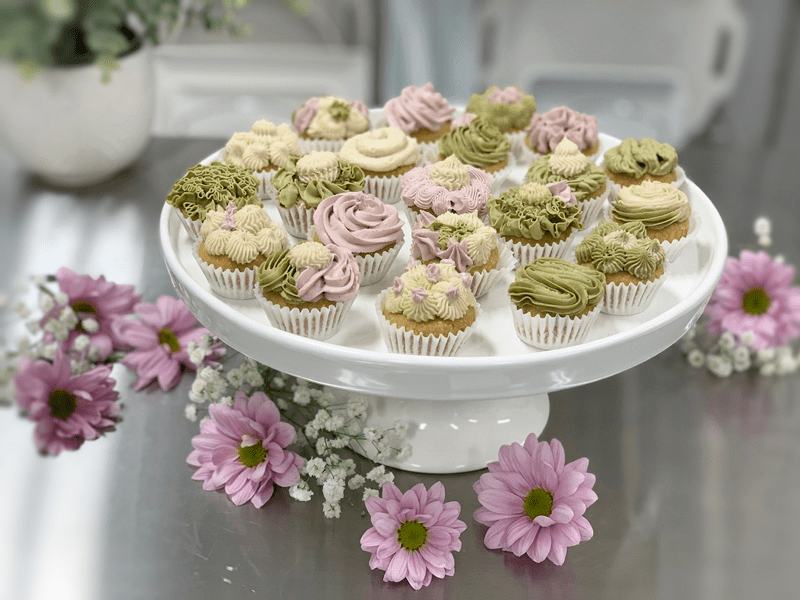
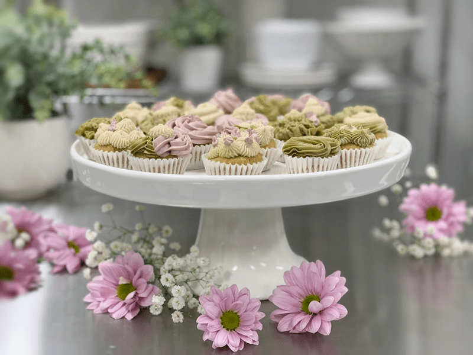

For the love of all things adorable and tiny! These cupcakes made me smile every step of the way. The pan, the itty bitty liners, the little cupcake batter balls, and the frosting! We can’t forget the frosting. I was piping and dancing around the kitchen to one of my new Pandora playlists; Fly Me to the Moon Radio. All the songs this list has been playing makes me glide all over the kitchen. So what if it took me three times as long to make them, I was having fun!

Frankly, this recipe was created out of necessity. You see every other Wednesday evening, Bob and I host a music jam at the house. We have some amazingly talented musicians in our area, and having the pleasure to listen to them regularly is comfort food for my soul. There is something so peaceful to me when live music is played throughout the house! Anyway, I was caught off guard the other day when I learned that it wasn’t Tuesday, no it was Wednesday (lost a day), and that meant that I needed to put together some treats for our guests quickly.

I will never pass up an opportunity to feed people delicious and nutritious foods! So every other Wednesday, I always make sure that I have some beautiful raw creation waiting in anticipation of being devoured. Now, in this case, I must say that I already had the frosting made up from a dessert that I made a few days prior, but the cupcakes were created within fifteen minutes. All I needed to do after that was color the frosting and pipe away.
There are many different frosting color options and ways of going about it, but I will share below what I did for what you see in the photos. For more ideas on coloring, click (here).

Can you believe that this frosting is RAW and Vegan? It’s so velvety!
NO DEHYDRATION REQUIRED
Can I get an Amen? I will wait… aah got one! Thank you. Hehe But seriously, you read that right, these cupcakes don’t require dehydration, nor do they require chilling or baking. They can be enjoyed straight away! If you have any leftovers, store them in the fridge in an airtight container. Shoot, you can even freeze them if you want to make them well in advance. BUT, you will want to frost them the day you are serving them.
The frosting holds perfectly at room temp, 70 degrees (F), but after about five hours of sitting out, I noticed that the colored frosting started to darken a bit around the edges. So if you want to be nitpicky about it, that is the only tweak about these cupcakes.
Size Matters – Portion Control
I made these cupcakes petite for a reason. Raw desserts are dense with nutrition and flavor, so a little goes a lot further than store-bought processed pastries. I don’t want people to go home with a sour belly because they overate. I want them to leave satisfied, nurtured, and feeling light on their feet. And if they don’t, they can’t blame my little cupcakes. Hehe. So my recommendation is to err on the side of small. They can eat two or three if they desire. Their tummy will be their radar, not their eyes if you know what I mean.
I don’t know about you, but I think we should get busy in the kitchen, play some Frank Sinatra, and make some scrumptious cupcakes, petite cupcakes that is! Many blessings, amie sue
 Ingredients
Ingredients
Cupcakes